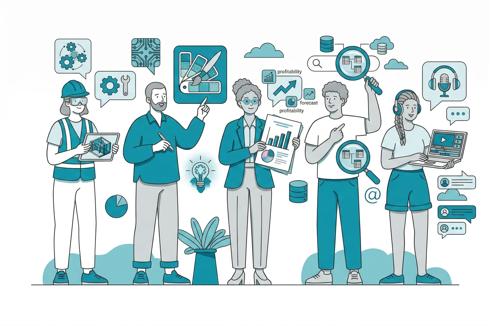

Leading fulltime production support with partners IBM and TCS for BMW NL's strategic applications — MINI IDE, Logilink (credit decisions), Carbon Tracker (emissions analytics), and Flexible Fleet (fleet management) — maintaining 99.9%+ uptime SLAs.
Bridging BMW stakeholders and TCS: translating priorities into clear task queues, tracking execution to closure, and safeguarding SLA-level service quality. Setting and tracking service KPIs across incident, change, problem, and release queues; chairing root-cause reviews that feed fixes into the continuous-improvement backlog.
Introduced Git-versioned operational runbooks and streamlined escalation playbooks, trimming mean time to restore for priority-1 incidents by roughly 25%.
Responding to nightly Informatica PowerCenter failure alerts, investigating issues in PowerCenter Workflow Monitor, and coordinating fixes with developers to keep next-day data-warehouse loads on schedule.
Managing formal onboarding of applications into BMW's standardized IT landscape, ensuring alignment with enterprise architecture standards (eGRC). Leading cross-functional roll-outs of core configuration changes and version upgrades with zero customer-facing downtime.
Overseeing IT governance checks administered centrally by BMW Group, ensuring all operational activities comply with established architectural, security, and process standards.
Data Migration & Architecture
Leading end-to-end migration planning for an Informatica PowerCenter-based DWH (Datavault 2.0) to a custom target architecture — translating a legacy 2-step data warehouse (Staging → Data Vault → Data Marts) into a 1-step AWS architecture (Staging → Cloud) on Snowflake, eliminating complexity while maintaining 100% business logic integrity.
Developed a comprehensive project estimation model using object-based complexity scoring across 208 database objects, accurately forecasting 618 man-days of effort with technology-specific multipliers for the Snowflake/DBT/Glue stack.
Designed an interactive Gantt chart and visual timeline with dynamic hour/day calculations, multi-zoom capabilities (months/weeks/days), and real-time progress tracking — enabling stakeholders to visualize a 25-month project timeline and critical path dependencies across 4 sequential phases.
Facilitated cross-functional collaboration between Belgian and Dutch teams, conducting workshops to resolve scope ambiguities and align on architectural translation approaches.
AI & Innovation-Focused Contributions
Active member of the BMW NL IT AI Core Team, contributing to technology evaluations and feasibility analysis of AI-driven process improvements.
Building an AI-assisted ticketing prototype that auto-flags impending SLA breaches, suggests context-matched knowledge-base articles, and streamlines escalation paths — currently in proof-of-concept stage.
The role has two halves: running the applications day to day on the left, and moving the data warehouse on the right.The migration drawn as a change: what the data passed through before, and what it passes through after.
IT Operations Analyst – Daily Manager
Developed and tested custom features for Royal HaskoningDHV's ERP system (Unit4) alongside internal teams, ensuring seamless operations. Served as the single point of contact for resolving ERP-related IT tickets and complex queries, effectively managing escalations and enhancing user experiences across various IT applications.
Changed existing IT operations with flexible and robust IT governance policies, ensuring business continuity and competitive advantage by staying current with modern IT service management practices.
Aligned specialized in-house development teams with Agile and Scrum methodologies, leveraging JIRA and Microsoft DevOps for efficient project management and product delivery.
Evaluated enterprise automation tools for potential enhancements and modifications, implemented corrective measures to address deficiencies, and collaborated with testing and portfolio managers to ensure optimal system performance.
Managed Docker Business licenses at enterprise scale, implementing single-sign-on (SSO) and SCIM provisioning to enhance security and efficiency.
Tested and prototyped Copilot Studio to create and deploy personalized AI agents, consolidating knowledge-bases and experiences to simplify technical and functional troubleshooting.
Organized team-building events and participated in leadership-focused professional development programs, fostering a collaborative and growth-oriented work environment.
Key Projects and Strategic Initiatives
Supported and led an internal analytics team, establishing a relational database infrastructure on Microsoft Azure (Azure Data Lake), sourced via Azure REST APIs with Azure Active Directory authentication. Automated data ingestion for Power BI analytics by deploying ETL pipelines using Alteryx, minimizing manual data refresh inaccuracies. Developed and validated POWER-BI dashboards through iterative Agile methodology.
Developed customizations in Microsoft D365 using Microsoft PowerApps and PowerAutomate, enhancing system functionality and workflow efficiency.
Prepared presentations, action trackers, and IT documentation tools across multiple functional areas. Maintained detailed technical notes and documented processes with diagrams and flowcharts, ensuring reusability and knowledge transfers within the organization.
Building and testing POWER-BI dashboards for the Analytics team in RHDHV.
Analyzing information-systems, project-management tools, custom-software, etc. within the Enterprise Automation department for potential enhancements, modifications, and add-ons.
Two halves again: running and extending the ERP on the left, and the analytics chain built beside it on the right.
Completed a freelance project for LionRock Maritime (an Amsterdam-based data technology specialist in drawing insights for tugboat operators), as a Microsoft POWER-BI consultant.
Enhanced tugboat operation insights through data analysis and Power BI consulting. Improved predictive machine learning models with tailored problem statements, driving actionable insights for LionRock Maritime's clients.
Developing a database-driven web-application using HTML, CSS, PHP and SQL for managing consulting services and client information using AGILE principles.
Analyzing internal information management processes and gathering and elicitation of requirements.
Retrofitting a POWER-BI dashboard for improved utilization of consultants/employees and project management.
Project management and issue tracking with Microsoft Project GANTT Charts, communication plans, budgeting, time-boxing, scheduling feedback sessions.
Prioritizing project requirements using the MoSCoW method.
Conducting usability testing with clients.
A freelance Power BI engagement, kept generic here because the work is under NDA.Weekly reporting built from Dynamics 365 exports and simplified in Power BI.A graduation internship: a data-driven web application, with the method that produced it.
Conducting a user requirements analysis for Microsoft Dynamics NAV usage from multiple stakeholder perspectives.
Developing a Standard Operating Procedure (SOP) for accelerated Microsoft Dynamics NAV.
Implementing a dashboard in IBCS standard for monitoring KPIs — Gross Margin %, Backlog, Orders (open and closed), Delivery Performance, Sales — from Microsoft Dynamics NAV 2016.
Observing the way of working and then searching for opportunities to improve the use of CRM (Salesforce), which is used by the entire commercial part of the company.
Creating a conceptual design for a software module which collaborates with the Zetes Salesforce environment by analyzing business requirements to enhance marketing activities.
Delivering a Functional Requirements Document for this concept module along with a User Interface Design (UID).
Creating a comprehensive press-kit and toolkit for events including landing pages for marketing campaigns using HTML/CSS, and banners and posters using Canva.com.
Accelerating an ERP already in place, ending in a dashboard in a reporting standard.A scenario analysis of the CRM: the design was delivered, not deployed.
IT Ticketing & Knowledge Management System (Sep 2024 – Present)
Developing a full-stack prototype IT helpdesk and ERP system from scratch, focusing on structured issue tracking, role-based access, SLA monitoring, and integrated knowledge management. Currently running on a self-contained portable stack of Apache with mod_php and MySQL, bundled with the application rather than installed on the machine.
Tech Stack: PHP, MySQL, HTML, CSS, JavaScript.
Key Features: Role-Based Access Control (RBAC) across IT support tiers (Tier 1–4); structured ticket generation with escalation options; a knowledge base with article categorization and tagging for self-service; automated SLA tracking with color-coded urgency indicators; team management with admin-assignable roles and permissions; and an integrated Financials module covering Invoices, Expenses, Ledger, Budget, and a Chart of Accounts.
AI Workflow (PoC): Integrating an LLM-powered agent that scans open tickets, predicts imminent SLA breaches, surfaces context-matched knowledge-base articles, and proposes escalation paths.
A research and development project, built from scratch: the service side on the left and the engineering behind it on the right.
I would introduce myself in a professional context as:
An experienced IT Operations professional currently overseeing BMW Nederland's fulltime IT applications, driving incident, change, problem, and release processes under strict ITIL and centrally governed standards. Recognized for securing 99.9% uptime across cloud and enterprise platforms and compressing MTTR through version-controlled runbooks and rigorous root-cause reviews.
A pioneer of selective AI adoption — developing proof-of-concept ticketing solutions that predict SLA risks, surface contextual knowledge, and streamline escalations, while safeguarding compliance and operational resilience.
Someone who combines deep technical fluency in cloud, ETL, and integration landscapes with strong business acumen from prior marketing, finance, and project-management roles, delivering clear, persuasive communication to stakeholders at all levels.
A motivated professional with international work experiences in IT operations, data analytics, digital marketing, and operational roles based in the Netherlands and Germany.
Having a solid background in Information and Communication Technology, Corporate Management, and professional experiences that combine tech and business at their intersection.
Having a knack for simplifying complex technical ideas — quantitative or qualitative — to non-technical minds in an engaging way. I am a first principle's thinker and I like connecting the dots as I create a view of the Big Picture!
Having a strong interest in learning on the job and developing the working knowledge required for the practice, irrespective of the problem or the technology. I am motivated by ambitious goals and challenges within the intersection of technology and business, and I like to face them head-on!
I thrive in a world that combines both tech and business. Digitalization, product-ownership, marketing and value-creation — all aspects which I believe should be realized from a unified vision or ideology. I also believe in bold moves for innovation.
Sometimes a little-bit of risk can yield great rewards. I always push myself to think from all the sides of the box to find the situation which can yield the maximum reward or the best-possible outcome!
With that being said, I intimately understand the need for constraints in business logic. I love finding myself working with the details, designing systems which are complacent to constraints whilst remaining successful in terms of the over-all goals they need to achieve.
The core values that I believe in are sincerity, creativity, showing initiative and taking on responsibility. I am the type of team player that listens and allows my actions to speak for itself. Furthermore, I hold a seasoned sense of respect for my seniors and diligent care for the success of my peers.
Overall grade point average of 93 out of 100 grade points (1.4) with distinction.
Main Subjects: Customer Management, Strategy and Governance, Value-based Corporate Finance, Corporate Change and Alignment, Strategic Marketing, Economics and Ethics, Quantitative & Qualitative Research Methods
Main Subjects: Business Economics and Administration, Data Warehousing & Statistics, E-Business, Network Architecture, Service Oriented Architecture & Management, Supply Chain Management, System Development, User Interface Design
Putting models to work inside a running service, and measuring whether they helped.
Evaluation & Model Routing
Deciding which model runs next, on evidence rather than reputation.
AI Governance & Responsible Adoption
Controls that sit beneath the model, where they cannot be talked around.
IT Service Management
The chain from an incident to a structural fix, governed rather than improvised.
IT Risk, Governance & Continuity
What an application must prove before it is allowed to carry the business.
Engineering
Building the thing, not only specifying it.
Cloud & DevOps
Where the thing actually runs, and how it gets there.
Finance Automation & ERP
Keeping the books of a system that bills for its own work, and the controls that stop it lying.
Data, Applications & Delivery
Moving warehouses, owning platforms, and shipping against a plan.
Earlier ground, still occasionally useful: Salesforce, digital marketing analytics and technical SEO, and Ethereum smart contracts, the subject of a master's thesis on improving invoicing accuracy.
PROFILE HIGHLIGHTS
LIONROCK RECOMMENDATION
SELF-GUIDED PROJECTS

DeskOps
Sep 2024 – Present
A full-stack helpdesk and ERP system built from scratch, solo, featuring role-based access, SLA monitoring, a financials module, knowledge management, and a RAG-powered AI research layer with ChromaDB, multi-model LLM fallback, and two-pass citation generation.
I am an IT Operations Specialist at BMW Nederland, in post since January 2025. The role runs full-time production support for a set of strategic applications, among them credit decisioning, emissions analytics and fleet management, run together with partner teams at IBM and TCS and held to the uptime commitments those services carry.
Day to day that means owning the incident, change, problem and release queues: translating BMW priorities into work the partner teams can execute, tracking it to closure, chairing root-cause reviews, and feeding what those reviews find into a continuous-improvement backlog. Git-versioned runbooks and tightened escalation playbooks have brought the mean time to restore on priority-1 incidents down, and the figure is tracked rather than asserted. Nightly Informatica PowerCenter failures reach me first, early enough to keep the next day's data-warehouse loads on schedule.
The other half of the job is governance. I manage the formal onboarding of applications into BMW's standardised IT landscape against enterprise architecture standards, lead configuration changes and version upgrades without customer-facing downtime, and answer the IT governance checks administered centrally by BMW Group. The Career tab near the top of this page sets the whole of it out, with a diagram of how the two halves divide.
Backwards, and slowly. The system is carrying the business while you change it, so the first job is not the target design, it is an honest inventory of what the current one actually does. On the warehouse move I am planning now, every object in it was catalogued and scored for complexity before anyone drew the new architecture. These projects usually fail in the same place: the new design quietly omits something the old one did at two in the morning on the last working day of the month.
Then simplify, but only where the simplification can be proved. That warehouse loses an entire layer, two steps become one, and the rule governing it is that every piece of business logic survives the translation. A target architecture is not better for having fewer boxes on the slide. It is better when it does the same work with less to maintain and you can point at where each rule went.
Then sequence it so that each phase stands on its own and nothing is switched off until the thing replacing it has been proved in use. The human risk is a risk like any other and usually the larger one: on that project it was a scope ambiguity between two teams in different countries, settled in workshops while it was still a question rather than later as a change request. The same discipline applies at a much smaller scale, where a version upgrade or a configuration change has to land with no customer-facing downtime.
The order the steps go in, and the rule that governs the last one.
DeskOps is a helpdesk that grew into an ERP, written from scratch, solo, since September 2024. It carries the full incident lifecycle, role-based access across support tiers, SLA enforcement on business-hour calendars, double-entry financials, billing, timesheets, knowledge management and KPI analytics. Measured from its own repository, that is 16 core modules, 78 screens, 590 API endpoints, 306 database objects and more than 1,400 commits. The whole stack, database and inference engine included, sits in one folder and runs with the network unplugged.
I build it because operations work shows you exactly where service management leaks, and an opinion about that is worth more once you have had to implement it. Separation of duties, a change that cannot skip its approval, an SLA clock that stops at closing time: each of those exists in DeskOps as code I had to make work, not as a slide. There is a full write-up of the system, screen by screen, at DeskOps.
The system as a stack: what each layer holds, and the folder that holds all four.
I am a member of BMW NL's IT AI Core Team, which evaluates where AI genuinely improves a process and where it only appears to. My own prototype flags tickets heading for an SLA breach, surfaces knowledge-base articles that match the context, and proposes escalation paths. It is a proof of concept, and I describe it as one.
The line is that nothing is trusted to the model behaving well. In DeskOps four disciplines are enforced around it. Answers are grounded in indexed evidence or not made at all. The everyday work runs on a model on the same machine as the data, with cloud models as a contingency rather than a default. Anything cloud-bound passes a redaction gate that strips names, emails and identifiers and hashes each removal, so an audit trail exists without a copy of the secret. Claims carry citations that a screening pass can strike out, and exact work such as arithmetic and dates goes to deterministic tools rather than the model's mental maths.
Guardrails below the model, schema allow-lists, read-only execution accounts and scoped, revocable tokens are what enforce those disciplines. The Areas of Interest list above says where I rate myself on each of them.
The four disciplines drawn as a path: a request is grounded, kept local, scrubbed if it must leave, and cited before it is shown.
Techno-functional, and by now that is a description rather than an ambition. The functional half is what the BMW role asks for: requirements, service levels, governance checks, stakeholder workshops, estimation models that have to survive scrutiny. The technical half is that I build the systems too, in PHP, SQL, Python and JavaScript, which is why the estimation model and the architecture it prices are both mine.
The reason I want both is simple. A functional consultant who has never shipped the thing tends to specify the convenient version of it, and a technical one who has never sat through a governance review tends to build something that cannot be approved. I would rather write the specification and then be the person who finds out what was wrong with it. The distinction as the ERP world draws it is set out well by Do You Even ERP.
The two halves as one spectrum, with the failure each end produces when it is all a person has.
By starting with the number the business already feels, not with the technology I would like to use. The warehouse migration was never argued as "Snowflake is better". It was argued object by object: every one of them counted and scored for complexity, an effort figure that could be traced back to those scores, a phased plan and a critical path that anyone in the room was free to take apart. An estimate built that way is far harder to wave away than a conviction, because it answers the only question that matters: where did that number come from?
Then what it buys and when it arrives: a layer of the warehouse removed, every piece of business logic preserved through the translation, and a date against each phase. Then the risk, and who carries it. On that project the risk was scope ambiguity between two teams in different countries, so it was settled in workshops while it was still a question rather than later as a change request. I would rather lose an argument in a workshop than in a steering committee.
The last part matters most. A case has to be able to lose. If the only answer the sponsor can give is yes, it was never a case, it was a pitch, and the next one will be trusted less. The same discipline sits behind the multi-cloud study in the research works above, which commits to figures for availability and recovery rather than to adjectives.
The order the parts go in, and the fact that the last two are not optional.
Three ways, and they do different jobs. Courses, when a subject deserves a syllabus rather than a search: those are listed under Certificate Courses Completed above, from Business Analysis Foundations and Agile Requirements Foundations through to the Google Data Analytics programme. Reading, when a field moves faster than any syllabus, which is most of applied AI at present. And building, which is the only one of the three that tells me whether I actually understood the thing.
Where it matters I write it up instead of filing it away. The research works above are part of that, and DeskOps grows against numbered improvement programmes, more than 1,400 planned points across an ERP roadmap, a UI programme and a KPI rehaul, each item written down before it is built and annotated in place once it lands.
I hold an MSc in Corporate Management from the University of Europe for Applied Sciences in Berlin, Germany, completed with distinction. My thesis examined Ethereum smart contracts as a way of improving invoicing accuracy. Before that I took a BSc in Information and Communication Technology at Fontys University of Applied Sciences in Eindhoven, the Netherlands.
The Education tab near the top of this page carries the diplomas, the transcripts and the subjects behind both degrees.
The useful answer is not a personality type, it is what I do when a team is under load. Most of my work runs through people who do not report to me: partner teams at IBM and TCS, developers in another country, vendors with their own priorities. That teaches you two things quickly. Roles have to be explicit, and the context has to be shared, because a team that cannot see the whole picture will cover the same ground twice and leave a gap somewhere else.
I like a clear description of who owns what, with enough room to step outside it when the work asks. I am most useful finding the thing nobody had thought to look for, weighing options without a stake in the answer, and being the one who checks the work before it goes out. I am least useful driving a team by force of will. I would rather the evidence did the pushing.
The ratings below are Dr. Raymond Meredith Belbin's team roles on a five-star scale, and they are self-assessed, which is worth exactly what self-assessment is worth.
Role
Rating
Resource Investigator
Uses their inquisitive nature to find ideas to bring back to the team.
Teamworker
Helps the team to gel, using their versatility to identify the work required and complete it on behalf of the team.
Co-ordinator
Needed to focus on the team's objectives, draw out team members and delegate work appropriately.
Plant
Tends to be highly creative and good at solving problems in unconventional ways.
Monitor Evaluator
Provides a logical eye, making impartial judgements where required and weighs up the team's options in a dispassionate way.
Specialist
Brings in-depth knowledge of a key area to the team.
Shaper
Provides the necessary drive to ensure that the team keeps moving and does not lose focus or momentum.
Completer Finisher
Most effectively used at the end of tasks to polish and scrutinise the work for errors, subjecting it to the highest standards of quality control.
Implementer
Needed to plan a workable strategy and carry it out as efficiently as possible.
It shifts with the team and the year. What does not shift is that trust and positive reinforcement are what make any of the rest of it work.
Treating a claim as something to be checked rather than asserted. It came out of a STEM education, where a fact is established by testing rather than by agreement, and it is the one habit I apply identically to a production incident, an estimate and an answer from a model.
In practice it is unglamorous. A root-cause review that has to survive the next occurrence of the same incident. An estimate built object by object, so that anyone can ask where a number came from. An AI feature made to cite its sources, because an answer that cannot be traced is an opinion with good grammar. The industry calls the state you get into doing this deep work. What it actually is, is refusing to move on while something is still unexplained.
Everything else I would list follows from it: critical and analytical thinking, reasoning, and being able to explain any of it to somebody who does not share the background. That last one decides whether the work travels beyond the person who did it, which is usually what separates a good piece of work from a useful one.
Building things that have to survive contact with real use. The intersection of technology and business is where I find that, because it is a creative job with a hard constraint attached: somebody has to be able to run the result on a Monday morning.
Two years of evenings on DeskOps is the honest evidence. Nobody asked for it, and it taught me what no course did. An SLA clock is simple until business hours. A billing pipeline is simple until the first credit note. An AI feature is simple until you make it prove where its answer came from. I enjoy the part where a thing I believed turns out to be wrong and the system tells me so.
And writing. I like finding where an idea connects to what I already think, and setting it down so a reader can argue with it. The research works above are that, and so are the write-ups that ship inside DeskOps, where the explanation travels with the feature rather than in somebody's head.
I worked at GUS as a data assistant from 15-Oct-2019 to 29-Feb-2020. The job was weekly marketing reporting built on exports from their CRM, Microsoft Dynamics 365, with every data set running past 11,000 rows. The reporting combined wildcards and COUNTIF functions to find specific strings in the data, aggregate them and produce the metrics the marketing department needed, which I thought was ingenious, but the formulas carried a lot of errors.
My task was to test those formulas against Excel's own COUNT and FILTER behaviour and correct them accordingly, then restructure them into templates somebody else could read. It was essentially set theory applied to a spreadsheet, and it is the earliest piece of work I can point to where the discipline was proving a calculation rather than producing one. The department gave me a recommendation letter for it.
A freelance Power BI engagement for LionRock Maritime, an Amsterdam data-technology company working with towage operators. It was part-time and it is under an NDA, so the models, the data and the client names stay with them.
What I can point to is the shape of the work and its outcome: analysis and consulting that sharpened the problem statements their predictive models were built to answer, which is usually where a modelling project is won or lost. The client wrote a at the end of it, and it is on my LinkedIn profile.